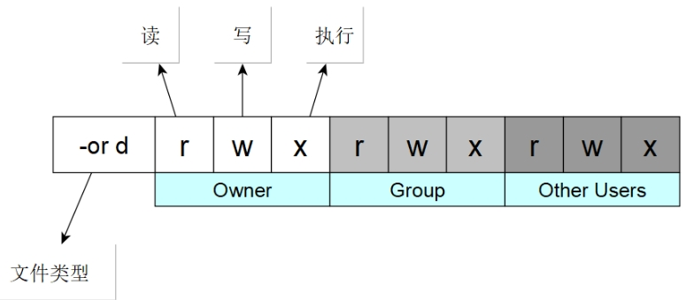
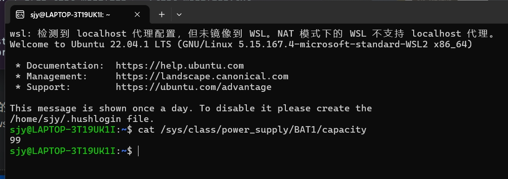

YSYX学习-1-Linux系统安装和基本使用
学习记录： 学习记录。
内容：The Missing Semester of Your CS Education 中文版
LinuxBasic
GUI和CLI是两种用户与计算机进行交互的方式。
GUI（Graphical User Interface，图形用户界面）：GUI是一种基于图形化界面的操作系统用户界面。
CLI（Command Line Interface，命令行界面）：CLI是一种通过在命令行或终端界面输入命令来与计算机进行交互的用户界面。
安装PA所需工具
apt-get install build-essential # build-essential packages, include binary utilities, gcc, make, and so on
apt-get install man # on-line reference manual
apt-get install gcc-doc # on-line reference manual for gcc
apt-get install gdb # GNU debugger
apt-get install git # revision control system
apt-get install libreadline-dev # a library used later
apt-get install libsdl2-dev # a library used later
Ubuntu 中安装中文输入法
#安装框架
sudo apt install ibus
#切换框架
im-config -s ibus
#由于Ubuntu Desktop 20.04使用的是GNOME桌面，所以需要安装相应的平台支持包
sudo apt install ibus-gtk ibus-gtk3
#选择简体拼音输入法，完成安装
sudo apt install ibus-pinyin
#完成安装后，将中文输入法添加到输入源选项中
以上摘录自：https://blog.csdn.net/Aimonii/article/details/141260938
Linux基础课程概览与shell
missing:~$
$ 符号表示您现在的身份不是 root 用户,位置是 ~ (表示 “home”)。
echo命令
echo命令是Linux中用于在终端输出字符串的命令，常用于脚本编程、调试和显示变量值。
which命令
用于定位执行文件的路径。当输入一个命令时，which 会在环境变量 PATH 所指定的路径中搜索每个目录，以查找指定的可执行文件。 可以使用 which 程序。通过直接指定需要执行的程序的路径来执行该程序。
pwd命令
获取当前工作目录。
cd命令
切换目录 . 表示的是当前目录，而 .. 表示上级目录
ls命令
查看指定目录下包含哪些文件 利用第一个参数指定目录，否则 ls 会打印当前目录下的文件。
通常，在执行程序时使用 -h 或 –help 标记可以打印帮助信息，以便了解有哪些可用的标记或选项。
ls: List directory contents dir: Briefly list directory contents dir: Verbosely list directory contents dircolors: Color setup for ls
ls -l是Linux和unix命令，意思指以长格式的形式查看当前目录下所有可见文件的详细属性。
man命令
它会接受一个程序名作为参数，然后将它的文档（用户手册）展现给您。注意，使用 q 可以退出该程序。
cat命令
cat命令是Linux系统中用于查看、创建和合并文件内容的工具。它源自英文单词“concatenate”，意为“连接”。cat命令的基本功能是将多个文件的内容串联起来显示在标准输出（通常是终端）上。
查看单个文件的内容：使用命令 cat filename。 创建新文件并输入内容：使用命令 cat > newfile，用户可以在终端中输入内容，然后使用Ctrl+D保存文件。 合并多个文件的内容：使用命令 cat file1 file2，这将合并file1和file2的内容并显示在终端上。 重定向输出：可以将命令的输出重定向到文件中，使用 > 符号创建新文件，使用 » 符号将内容附加到现有文件。
touch命令
创建一个文件。
mkdir命令
创建新文件夹
rm命令
删除指定的文件。谨慎使用
rm <文件名>：删除指定的文件。 rm -r <目录名>：递归删除指定目录下的所有文件和子目录。 rm -f <文件名>：强制删除，不进行确认提示。 rm -i <文件名>：在删除前进行确认提示。
重定向输入输出流
< file和 > file
echo hello > hello.txt
给hello.txt里面写入hello。
sudo
root提升权限。
chmod命令
chmod（change mode）命令是用于控制用户对文件的权限的命令。
Linux/Unix 的文件调用权限分为三级 : 文件所有者（Owner）、用户组（Group）、其它用户（Other Users）如下：

只有文件所有者和超级用户可以修改文件或目录的权限。可以使用绝对模式（八进制数字模式），符号模式指定文件的权限，而使用权限则为所有使用者。
chmod 777 file 给全部权限打开。读 + 写 + 执行
chmod 777 file//表示User、Group、及Other的权限都设为rwx
chmod 764 file//表示User、Group、及Other的权限分别为rwx、rw-、r--
以上摘录自：https://blog.csdn.net/qq_52836452/article/details/129642664
sh命令
sh是linux中运行shell的命令，是shell的解释器，shell脚本是linux中壳层与命令行界面，用户可以在shell脚本输入命令来执行各种各样的任务。 shell程序必须以“#!/bin/sh”开始。shell中#一般表示注释的意思，所以很多时候认为"#!“也是注释，但实际上并不是。
PS “#!/bin/sh"是对shell的声明，说明你所用的是哪种类型的shell及其路径所在。
#!/bin/是指此脚本使用.bin/sh来执行。
#!是特殊的表示符，其后面跟的是解释此脚本的shell的路径，如果没有声明，则脚本将在默认的shell中执行，默认shell是由用户所在的系统定义为执行shell脚本，如果脚本被编写为在Kornshell ksh中运行，而默认运行shell脚本的为C shell csh,则脚本在执行过程中很可能失败。所以建议大家就把”#!/bin/sh"当成C 语言的main函数一样，写shell必须有，以使shell程序更严密。
以上摘录自：https://blog.csdn.net/mrsgflmx/article/details/143429498
WSL2下查看笔记本电量。虚拟机无此数据，无法查看。
